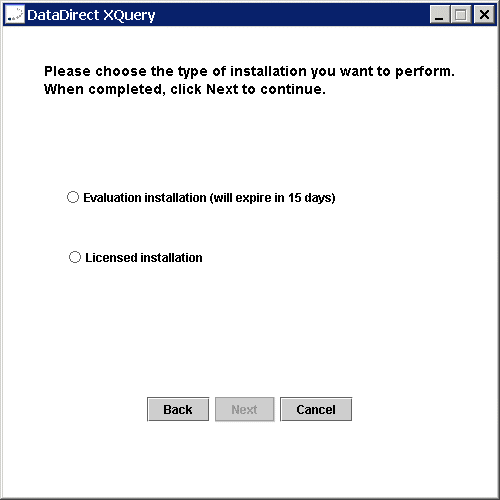

Installation Procedures
You can install DataDirect XQuery using
- A graphic user interface (a GUI). See GUI Installation for instructions.
- The command line. See Command-Line Installation for instructions.
Regardless of which method you use, note the following before you begin:
- Make sure that your Java Virtual Machine is on your path. J2SE 1.4.x or later is required to use DataDirect XQuery.
- Choose an installer directory for the DataDirect XQuery installer. This can also be the installation directory for DataDirect XQuery, but does not need to be. You can choose another installation directory during the installation procedure.
GUI Installation
- Locate the DataDirect XQuery jar file, datadirectxquery.jar, in the /xquery directory on the DataDirect Technologies CD, or locate the downloadable product on the DataDirect Web site(http://www.datadirect.com).
- Copy or download the datadirectxquery.jar file to the installer directory you have chosen.
- From the installer directory, execute datadirectxquery.jar.
- Click Next to start the installation.
The License Agreement window appears.
- Make sure that you read and understand the license agreement. To continue with the installation, select the
I accept the terms in the license agreement option; then, click Next.A window appears asking you to choose the type of installation you want to perform.

- Select one of the following options:
- Evaluation installation (will expire in 15 days). Select this option to install an evaluation version of DataDirect XQuery. Click Next to continue with the installation. Skip to Step 8.
- Licensed installation. Select this option if you have purchased one or multiple licenses of DataDirect XQuery. Click Next and continue with the next step to enter your product licensing information.
A window appears asking you to enter your product keys.
- Type the 8-character product key in the Enter Key field, and click the Add button. If you were issued multiple product keys, you can add them sequentially to the Product support for list box. A list of the data sources for which DataDirect XQuery is licensed appears in the list box and support for these data sources will be installed.
NOTE: When you install support for a relational data source, you also get support for XML data sources.
To delete support for a data source listed in the Product support for list box, select the data source to delete and click the Remove button. Support for the selected data source is removed from the list box and is not installed when you continue with the installation.
- Click Next to continue with the installation.
A window appears asking you to select components to install.
The Install DataDirect XQuery and Install DataDirect XQuery Online Help options are grayed out because both are required.
By default, the installer installs the following components:
- DataDirect XQuery Examples. Files with the same name are replaced during installation. If you are reinstalling DataDirect XQuery and have reconfigured the examples, you might not want to reinstall the current examples. In this case, clear the Install DataDirect XQuery Examples option.
- Javadoc for XQJ and DataDirect XQuery.
- In this window, perform the following steps:
- If you want to install local copies of the DataDirect XQuery documentation, select the Install DataDirect XQuery Online Books option. The books are installed in the books/xquery subdirectory of the installation directory.
- In the Install Directory field, type the path (including the drive letter on Windows machines) of the DataDirect XQuery installation directory or click the Browse (...) button next to the field to select an installation directory.
The default value for the installation directory is the directory from which the installer is running. Verify that you have entered (or selected) the correct installation directory.
- Click Next to continue.
A window appears asking you to confirm your installation options.
- Click Back to revise your choices, or click Install to continue with the installation. When you click Install, DataDirect XQuery, the online help and, if selected, the examples, the Javadoc, and the online books are installed.
The final installer window appears.
- Click Finish to exit the Installer. The Quick Start, a brief guide to what to do next after installing DataDirect XQuery, is launched automatically when the installer exits. If you do not want the installer to launch the Quick Start, clear the View QuickStart check box before clicking Finish to exit the installer.
Command-Line Installation
- Locate the DataDirect XQuery jar file, datadirectxquery.jar, in the /xquery directory on the DataDirect Technologies CD, or locate the downloadable product on the DataDirect Web site(http://www.datadirect.com).
- Copy or download the jar file to the installer directory you have chosen.
- At a command prompt, enter the following command:
java -jar datadirectxquery.jar -e {yes|no} -b {yes|no} -j {yes|no} -k key[{;|,}key]... -dinstall_dirwhere:
Example on Windows:
java -jar datadirectxquery.jar -e yes -b yes -j yes -k xxxxkey1;xxxxkey2 -d "C:\Program Files\DataDirect\DataDirect XQuery"This DataDirect XQuery command-line example performs the following actions:
- Installs the DataDirect XQuery examples (
-e yes).- Installs the DataDirect XQuery Online Books (
-b yes).- Installs the Javadoc (
-j yes).- Installs DataDirect XQuery with support for multiple databases (
-k xxxxkey1;xxxxkey2).- Installs the components to the installation directory C:\Program Files\DataDirect\DataDirect XQuery (
-d "C:\Program Files\DataDirect\DataDirect XQuery"). Note that because the directory path contains spaces, it is enclosed within double quotes.Example on UNIX/Linux:
java -jar datadirectxquery.jar -e yes -b yes -j yes -k xxxxkey1 -d /home/user/DataDirect/DataDirect_XQueryThis DataDirect XQuery command-line example performs the following actions:
- Installs the DataDirect XQuery examples (
-e yes).- Installs the DataDirect XQuery Online Books (
-b yes).- Installs the Javadoc (
-j yes).- Installs DataDirect XQuery with support for only one database (
-kxxxxkey1). See the previous Windows example for an example of how to specify multiple keys, but remember to enclose the entire key string within double quotes if you use a semicolon to separate the keys.- Installs the components to the installation directory /home/user/DataDirect/DataDirect_XQuery (
-d /home/user/DataDirect/DataDirect_XQuery). Because the directory path does not contain spaces, it is not enclosed within double quotes.